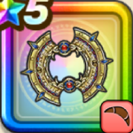

はてんの月輪
攻略班 9.5点 / シャドーステップぶんしんデュアルブレイカー頼れる相棒いくぜ相棒！盗賊のかみわざ一気にいくぞ！やってやろうぜ！
くわしい特徴
【レベル別習得スキル】 Lv1【盗賊】攻撃力+5 Lv10シャドーステップ（消費MP：5）華麗なステップでみかわし率を上げる Lv20ぶんしん（消費MP：最大MPの15%）ぶんしんを作り出し、次の斬撃・体技・ブレス攻撃時に70%に威力が減少した追加攻撃が2回発生する(戦闘中1回のみ使用可能) Lv30デュアルブレイカー（消費MP：61）敵全体に敵の数に応じて威力が600〜1000%に変化する体技ダメージを2回与える(会心発生時に超会心化) Lv35悪魔系へのダメージ+5% Lv40虫系へのダメージ+5% Lv45攻撃力+12 Lv50頼れる相棒（消費MP：最大MPの3%）自身と右隣の味方が相棒状態になり、さくせんに応じた行動を行う(戦闘中1回のみ使用可能) Lv50いくぜ相棒！（消費MP：最大MPの3%）自身と右隣の味方が相棒状態になる。相棒状態のキャラ同士は攻撃スキル使用時にもう1人のキャラの攻撃力と会心率を上げ限界突破を付与 Lv50盗賊のかみわざ（消費MP：10）自身がパーティの端だと味方全員のすばやさ上昇。端以外は攻撃時確率で敵1体の戦闘中のレベルを下げ自身の戦闘中のレベルを上げる効果を付与 Lv50一気にいくぞ！（消費MP：10）戦闘中自身が会心の一撃を3回発生させると自身のMPを一定量回復し、たまにゾーン状態になる Lv50やってやろうぜ！（消費MP：0）自身がゾーン状態だと攻撃スキル使用時に自身の相棒状態の味方に超会心化の効果を付与する 【限界突破スキル】 1凸スキルの斬撃・体技ダメージ+7% 2凸スキルの斬撃・体技ダメージ+7% 3凸スキルの斬撃・体技ダメージ+7% 4凸スキルの斬撃・体技ダメージ+7%